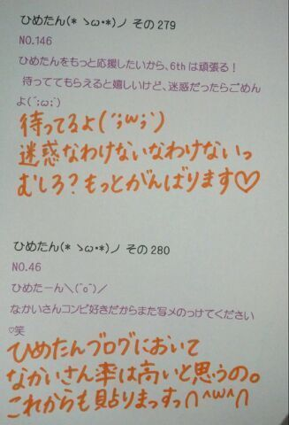

| 2013/07 03 Wed | ひめたん大図鑑51(2012年4 月) |
祝☆6thシングル「ガールズルール」発売！
そしてオリコンデイリーチャート1位！
本当に本当にありがとうございます(〃ω〃)
ライブのパフォーマンスとか握手会とかで
全力で感謝の気持ちを伝えていきたいなー
この作品で
また今までとは違った乃木坂を
知ってくださいねっ
今回は本当にありがたいことに
全部で３曲参加楽曲があります( ^ω^ )
じゃあ今日はtypeA「コウモリよ」！
「コウモリよ」は
ユニット曲になってます
まいやん、若月、愛未、ひめたん！
ユニット曲は2ndの 海流の島よ 以来っ
愛未とのユニゾンも新鮮かも( ω )
なにせ乃木坂にはなかった
メタルに挑戦とゆーことでー
夏だし。
こーゆーのもアリかしらどうかしら。
レコーディングルームの照明落として
ちょっと雰囲気作ったの
伝わりますかねー
ダンスもかっくいーんだよー♪
残りの２曲はまた明日。
あーあと、
みなさんに謝らないといけないのが
NOGIBINGO!初回オンエア
告知忘れてた(´・ω・｀)ごめんなさーい
これ衣装だよーこれで許してー

そしてオリコンデイリーチャート1位！
本当に本当にありがとうございます(〃ω〃)
ライブのパフォーマンスとか握手会とかで
全力で感謝の気持ちを伝えていきたいなー
この作品で
また今までとは違った乃木坂を
知ってくださいねっ
今回は本当にありがたいことに
全部で３曲参加楽曲があります( ^ω^ )
じゃあ今日はtypeA「コウモリよ」！
「コウモリよ」は
ユニット曲になってます
まいやん、若月、愛未、ひめたん！
ユニット曲は2ndの 海流の島よ 以来っ
愛未とのユニゾンも新鮮かも( ω )
なにせ乃木坂にはなかった
メタルに挑戦とゆーことでー
夏だし。
こーゆーのもアリかしらどうかしら。
レコーディングルームの照明落として
ちょっと雰囲気作ったの
伝わりますかねー
ダンスもかっくいーんだよー♪
残りの２曲はまた明日。
あーあと、
みなさんに謝らないといけないのが
NOGIBINGO!初回オンエア
告知忘れてた(´・ω・｀)ごめんなさーい
これ衣装だよーこれで許してー

1051まだ部屋の収納とか家具とか揃ってないの?
1052IKEA派?ニトリ派?家具にこだわりとかってある?
1053IKEAで何か雑貨とか家具と買ったの?
家具ねっいろいろ話し合ってはいるんだけどね意見がまとまらんのんよね←
IKEA派!この前初めてIKEAに感動しました!!!
おっきい家具は買わなかったけどハンガーとか、サーモンとか買って帰りましたよ☆
1054ロッククライミングやってるんだけど、どう思う?
へーすごーい怖そうっ
cmのやつだよね??んーおとこのこって感じ
(。・ω・。)!
1055乃木坂のメンバーってけっこう頭いいメンバーいると思うけど、ひめたんもけっこう頭良かったりする??
みんなは賢いねえ♪
中元さんはまったくそんなことないでございます(д)
1056宝物は?
ひめきゅんさん、めんばー、おともだち。
ひめたんに関わる全てのみなさんが宝物です。
いつもありがとう(^ω^)♪
1057もうすぐ誕生日だね(^^)
ファンレター以外に何かプレゼント送ってもいいかな?☆
福山に住んでるので、バラとかどうかな?キザすぎるかな(笑)
バラ!いいねえキザだねえ(*'`*)嘘です。
でも本当に素敵!ひめたんバラ祭り行ったことあるよ♪
プレゼントはおまかせしますよー☆
ありがとうございますっ
1058桜好き?
桜すき＼(^O^)／
桜餅もすき。でもさくらんぼは普通...。
1059放送部にも全国大会あるんですね!!何を競い合って成績が決まるんですか?
個人で朗読とアナウンス、団体でテレビ、ラジオ部門があります(^^)!
燃えるんだよねこれがっ
1060放送部だったんだ!スピーチとかするのかな?
スピーチとはちょっと違うけど、毎日校内放送かけてましたよ♪
1061東京ミッドタウン歩けるの?迷子にならない?
ひとりだったらよー歩かん('・・`)
し、ひとりなら空気よんで引き返します多分...。
10623年のときでも学級委員とかあったん?
学校のクラスでのエピソードとかあったら教えてほしいな♪
ありましたよ!え3年生は学級委員ないのー(ω)?
3年4組はにぎやかなんです。ちゃんとしなきゃいけない時も。ありゃりゃ←
1063ボクシングしてる人ってどうですか?応援してくれますか?
ボクシングわひゃああっ
テレビとかで見てて、痛くないかな大丈夫かなって思ってたの('・ω・`)
気をつけてね!超応援する!
左胸はみーんな共感できる応援歌だから。頑張りたい時辛い時聴いてください♪
立ち上がる回数諦めるなっ!!!
1064生誕企画どうだったかな?喜んでくれたらいいな!
本当に本当に嬉しかった!
あんね、どなたかコメントに書いてくださったけど、4月生まれっていつも損するの。
毎年クラス替えしてすぐが誕生日だから、みんな自分の誕生日を知らないじゃん...
だから今年はお祝いしてもらってTシャツも可愛くて素敵な誕生日になりました(^^)♪
まだ13日なってないけど満足です//ぽ
1065マイメロ好きですか?
マイメロちゃん可愛いよね(*'`*)
赤と白のおかおってだけで身につけたくなるもん♪♪
ちなみに今のふでばこぴんくマイメロちゃん☆
1066久しぶりにひめたんに手紙書こうかな?書いてほしい?笑
1067お手紙書きたいと思ったのですが、忙しいのに読んでもらえますか?
お手紙超好きだよ書いてほしいもん♪
だから毎日会う友達にも「お願いお手紙書いてー('`)」って言ってたなあ...
でもほんとに何の時間削ってでも読むよ//
1068好きなジュース何??
ミキサーで作る(強調)
いちごジュースばななジュース♪
1069何か楽器出来ますか?
ぴあの歴5年にして両手で弾けません。真面目に。
ソプラノリコーダー、音よれよれなけど一応 篠笛。
それからタンバリンは感覚で演奏できる気がする!
ボディパならかずみさん(高山一実chan)だね☆ぐるカーのPVでも披露したしねっ

(＊´・ω・＊)
コメント(192)
2013/07/03 23:12